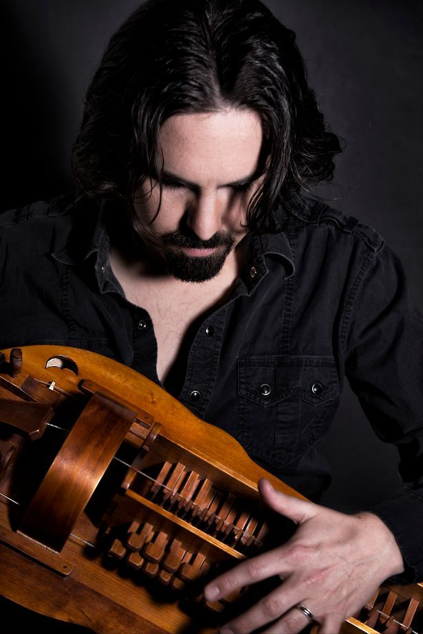

Bear McCreary
McCreary is a illustrious composer, most notable for his work within the past 20-25 years. Bear has written music for video games, film, and television, and has won several awards for his acheivments in music. This site will point out his major work and accomplishments.
Bio & Design/Composing Philosophy
Upbringing & Influences
[[[[Bear's upbringing into music and music composition.]]]] Lalalalalalala lalalaalal lalala lal lal ll l lalalalalaal lalal Lalalalala lalalalal al lalalalalaalala lalalalalal lalalalal a.
Summary of Career
[[[[summary of Bear's career]]]] Lalalalalala lalala lala la lalalal la. Lalalalalal lalalala lalalal lal alalala. lalalalalal lalalaal lal la l lalalalaal lala lalalalal alala l lalalalalal lala..
Film & Video Game Discography
Television, Film, & Television Scores
Some of his work has contributed to many different franchises, across different media. Listed here are some of his work:
- This title (20--)
- That title (20--)
- Oh, that one as well (20--)
- hm... what about this one? (20--)
- OH, This one! (20--)
- Alright, okay, and this one (20--)
" [[[[quote Bear's take on the E3 2016 demo event from the Rolling Stone interview.]]]] "
~ Bear McCreary, explaining the most prolific moment in his career.